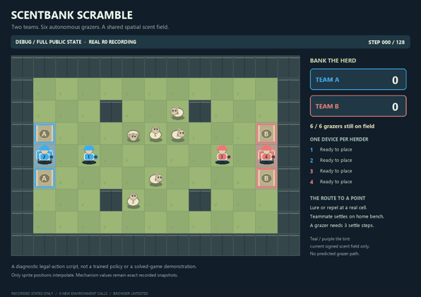
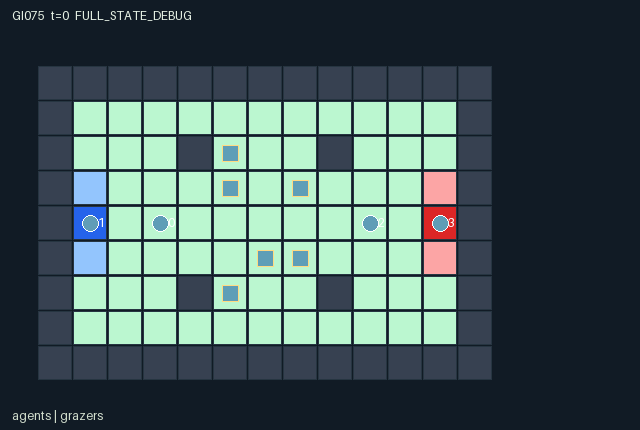

GI075 / SPATIAL
气味牧场争夺
四名牧人用诱导与驱离装置影响六只自主食草动物，竞争真实围栏与休息点。
Original saved demonstration
Recorded native state, often authored scripts or interventions; information scope and failures are preserved in the original provenance. This is a saved demonstration, not live browser play.

Release verification episode
Untrained uniform legal actions. Actual JAX state sampled along the full original episode; full-state debug camera. No human performance or learning claim.

Run this game
crucibles play --game 75
Start Python locally, then open the address printed by the terminal. Installation, multiplayer, takeover and keyboard controls →
Objective, rewards & ending
Exact task contract
{
"objective": "Bank the six autonomous neutral grazers for one's own team using position, attraction/repulsion pucks and a teammate's bench settling.",
"natural_termination": "Natural completion only when all six grazers have been banked; final actual counts determine winner or tie.",
"interaction": "Agents and objects occupy real cells. Wall-distance preferences drive simultaneous grazer proposals; rotating contention and consecutive teammate settling produce irreversible actual capture.",
"observation_access": "All current mechanism-relevant state is public. Each actor gets the exact declared flat observations and structural masks. Actions are public only after commitment; external PRNG provenance and future submitted actions are excluded. Derived scene arrays add no policy information."
}Declared per-step reward bounds: -6 to 6. Observability: fully_observable.
Rules
- Teams A and B each have two herders. Six neutral grazers move autonomously according to the combined public state.
- Each actor has one actual scent puck slot. Puck category 1 attracts and category 2 repels; effects use shortest paths around walls and apply regardless of owner.
- Non-settling herders repel nearby grazers. Public phase and nearby grazer crowding also affect candidate-cell scores.
- Actors and grazers use simultaneous old-occupancy rules. Contested grazer targets use rotating priority, not ID-ordered updates.
- Stand on the home bench and select settle to bank arrivals. Three consecutive valid settling transitions capture a grazer; interruptions clear progress.
- An already-arrived grazer stays while home settling is active. Opponents cannot stand on your pen/bench or cancel settling merely by proximity.
- New pucks act before their first aging decrement. Recovery starts cooldown 4; actual expiry starts cooldown 8. Charge and cooldown displays read these fields.
- A captured grazer disappears only when its active mask turns false and the real bank count increases. No invented capture path or score is shown.
- All six banked ends naturally with a winner/tie. At 128 steps an unfinished herd truncates with no claimed completed winner; natural completion has priority.
- Team categories, puck categories, positions, charge, heading and progress are state bindings. Custom per-kind art, signed field contours and score-tray flights are not encoded by this generic scene.
- All committed state is public; pending joint actions and reset keys are excluded. Old event buffers must not replay on an absorbing redraw.
- No game or animation has been executed. These are declarative bindings for a later trusted replay, not observed outcomes.
Original mechanism document (historical status wording retained)
# 75 — Scentbank Scramble — source attempt 00 Status: **AUTHORED_NOT_EXECUTED**. This is original authored source for one already-proposed game, not a new design count or an execution receipt. ## Rules and source evidence Two teams of two indirectly guide six autonomous grazers. One indexed lure/repeller slot per actor affects all grazers by exact map shortest-path distance, regardless of ownership. Non-whistling actors repel within distance two, crowding affects candidate preferences, and public phase supplies a small directional bias. Candidates use one shared snapshot; grazers cannot follow into vacated old cells, and rotating rank settles free-target collisions. An occupied home pen needs three consecutive bench-settle transitions; valid settling holds an already-arrived grazer, while a new arrival may earn the first step. Capture removes exactly that grazer and supplies the zero-sum team difference, copied to teammates once. Puck placement is useful on its placement step, then ages; recovery starts four full cooldown states and expiration eight. No capture proxy or completion bonus is added. - Exact map-only graph distances: `candidate.py:20`. - Unchanged reset sampling distribution: `candidate.py:51`. - Exact 868-column observation order: `candidate.py:92`. - Masks and joint recovery contingency: `candidate.py:134`. - Simultaneous agents and post-recovery placement: `candidate.py:162`. - Shared-snapshot float32 preference computation: `candidate.py:216`. - Exact tie order, calm hold and rotating target contention: `candidate.py:227`. - Consecutive settling and one-time capture: `candidate.py:246`. - Lifetime, cooldown, terminal priority and zero-sum reward: `candidate.py:257`. - Actual movement/capture event buffers: `candidate.py:289`. - Raw ended-state absorption: `candidate.py:157`. ## Interface, geometry and information - The v2 contracts apply to ordinals 74/75 by the source-stage request despite their historical 72/73 headings. - Design step_count is represented by scalar int32 state.t. All small signed counters, directions, codes and coordinates use int32; masks use bool; observations/rewards use float32. - All state entity positions and event endpoints use [x=design column,y=design row]. Terrain, heat/fuel/wetness and map indexing remain [y,x]. Observation columns retain the design's row-then-column order. - Reset PRNG key and provenance remain outside numeric state. Both original reset distributions are preserved by the source; no seed-conditioned override or canonical reset replacement is used. - The v2 done leaf is done. Ended raw calls preserve the entire state and causes, return zero reward, and do not advance t. Natural termination takes priority over truncation. - The exact graph distance geometry is held as an immutable derived int32[117,117] state leaf for static batching; it is computed from this map only and is not privileged information. - Visibility arrays, immutable puck_owner and per-agent bank-score views expose only already-public mechanism state. Placement masks retain joint recovery opportunities; raw_step resolves actual post-recovery occupancy. A deployment mask remains true when an occupying other-owner puck can be recovered by that owner from its current position in the same joint step. If that recovery is not actually chosen, raw deployment rejects without changing the slot. Permanently unavailable occupancy is masked. Agent target conflicts all fail; grazer conflicts choose the cyclic lowest rank and do not retry second choices. Opponent bank cells are forbidden to actors but open to grazers. A nearby opponent cannot veto successful bench settling. All map layouts are explicitly public in the manifest. Entity visibility equals the corresponding actual active mask for every role. Removed grazers/pucks use [-1,-1] only with inactive masks; gathers sanitize those sentinels. A ruined Cinderline bed remains a public map site even though its living entity becomes inactive. Observation row/column order is preserved despite the world position conversion to x/y. Action submissions are not visible before joint commitment. ## Termination, bounds and invariants All six captured grazers cause natural completion and a winner/tie from actual counts. At step 128 an unfinished herd truncates with winner_team=-1. Capture scores are monotone, score A + score B + active grazers = 6, and team returns equal the score difference. Active grazers and agents do not overlap; active pucks can share cells with a creature or agent but not another puck. Per-step team reward lies inside [-6,6]; observation bounds [-1,2] cover the normalized [0,1] public columns. These are declared bounds, not empirical results. An already-ended raw state is returned unchanged, including t, last reward and last event buffers, while the returned reward is zero and dones are all true. Historical event buffers must be deduplicated using external episode identity, event_tick and slot. The kernel never auto-resets. ## Scene and event mapping The scene binds agents, actual pucks and active grazers. Slots 0–3 are actor moves; 4–7 placement/recovery/rejection; 8–11 whistle changes; 12–17 grazer moves; 18–23 settle/capture; 24–27 expiry; 28 ending; 29–31 remain inactive. Capture payload is [old progress,new progress,team,captured flag], and the pen coordinate is recorded before the grazer is removed. Movement and capture can both occur in one transition. The scene is declarative and contains no HTML, script, URL or invented trajectory. It supplies actual entity positions/masks and attribute/event bindings to the later trusted renderer. No real frame or animation has yet been generated. ## Explicit unresolved limits - No candidate import, JAX import, execution, JIT, vmap, rollout, training or trusted validator invocation occurred. Shape/dtype claims are source declarations awaiting trusted execution. - The safe generic scene vocabulary can bind actor/grazer motion, puck kinds/charge, settling progress and capture disappearance, but cannot encode the optional signed field contour overlay, curved recovery particles or score-tray flights. Those richer effects are not claimed implemented. - No runtime solvability, numerical parity, balance, learning value or rendered-view acceptance is claimed. The original design uncertainties remain open. The package includes a fixed, unexecuted action script. Its initial-state requirements are explicit. The proposed seed is not evidence that reset selects those requirements; do not override or resample the source reset to manufacture the example. ## Provenance Author: `/root/astra_game_world_designer_001`; requested model `gpt-6-astra`, reasoning `max`. Source request SHA256: `ae7560c6c7e4dca45de71bb09283e94622a4c8d8523f08ab0acf5cf4a0db2cac`. Design JSON SHA256: `354a7bf0bd2148c0b0b8dd85c2f85e9c17748faa49e444341beae1cf260bb2c2`. Source SHA256: `9d6038ab31845dc1f1ce782334c3c0dee39ee4a4be409739fc21be116f39a818`. Source split is train, final_test_used=false, source_attempt=0. Backend revision and token usage are unknown/null. One source attempt is authored for this already-existing design; repair attempts, environment calls, rollout steps and training updates are zero. No trusted validator PASS is claimed.
Commands
Roles & abilities
agent_0 team_A_herder
agent_1 team_A_herder
agent_2 team_B_herder
agent_3 team_B_herder
Observation permissions
Training receives only the original observation rows. Role cameras use declared visibility; debug cameras are explicitly marked. Local benchmark records log debug exposure and role takeover history.
Exact observation layout
[
{
"slice": [
0,
702
],
"meaning": "board row-major [9,13,6]: wall; grass; team A pen; team B pen; team A bench; team B bench.",
"visibility": "public"
},
{
"slice": [
702,
726
],
"meaning": "agent_table row-major [4,6]: row/8; column/12; team A indicator; team B indicator; whistle_active; last_actions/8.",
"visibility": "public"
},
{
"slice": [
726,
762
],
"meaning": "puck_table row-major [4,9]: row/8 or 0 if inactive; column/12 or 0 if inactive; active; kind lure indicator; kind repeller indicator; lifetime/24; cooldown/8; owner team A indicator; owner team B indicator.",
"visibility": "public"
},
{
"slice": [
762,
852
],
"meaning": "grazer_table row-major [6,15]: row/8 or 0 if inactive; column/12 or 0 if inactive; active; capture_team none indicator; capture_team A indicator; capture_team B indicator; settle_progress/3; wander_phase N; wander_phase E; wander_phase S; wander_phase W; heading N; heading E; heading S; heading W.",
"visibility": "public"
},
{
"slice": [
852,
864
],
"meaning": "global row-major [12]: step_count/horizon; score A/6; score B/6; active grazer count/6; done; terminated; truncated; winner none; winner A; winner B; winner tie; (step_count modulo 6)/5.",
"visibility": "public"
},
{
"slice": [
864,
868
],
"meaning": "One-hot observer actor ID.",
"visibility": "self"
}
]Entity visibility & attributes
[
{
"id": "agents",
"kind": "agent",
"count": 4,
"position": [
"agent_pos"
],
"active": [
"agent_active"
],
"visibility": [
"agent_visibility"
],
"attributes": [
{
"state_path": [
"agent_team"
],
"meaning": "0 team A; 1 team B",
"display": "category"
},
{
"state_path": [
"whistle_active"
],
"meaning": "Actual current committed settle action at own bench",
"display": "flag"
},
{
"state_path": [
"last_actions"
],
"meaning": "Previous committed action, not an unsubmitted intention",
"display": "category"
},
{
"state_path": [
"agent_bank_score"
],
"meaning": "Current team's actual bank score; copied from bank_score",
"display": "number"
}
]
},
{
"id": "pucks",
"kind": "object",
"count": 4,
"position": [
"puck_pos"
],
"active": [
"puck_active"
],
"visibility": [
"puck_visibility"
],
"attributes": [
{
"state_path": [
"puck_owner"
],
"meaning": "Immutable owner actor ID, equal to slot ID",
"display": "category"
},
{
"state_path": [
"agent_team"
],
"meaning": "Owner team of this same-indexed puck slot",
"display": "category"
},
{
"state_path": [
"puck_kind"
],
"meaning": "1 attraction; 2 repulsion; no team-specific effect",
"display": "category"
},
{
"state_path": [
"puck_lifetime"
],
"meaning": "Actual remaining lifetime after this step's aging",
"display": "bar"
}
]
},
{
"id": "grazers",
"kind": "object",
"count": 6,
"position": [
"grazer_pos"
],
"active": [
"grazer_active"
],
"visibility": [
"grazer_visibility"
],
"attributes": [
{
"state_path": [
"grazer_settle_progress"
],
"meaning": "0..2 pending steps; 3 means captured and inactive",
"display": "bar"
},
{
"state_path": [
"grazer_capture_team"
],
"meaning": "-1 no pending capture; 0 team A; 1 team B",
"display": "category"
},
{
"state_path": [
"grazer_heading"
],
"meaning": "Last accepted move: 0 north,1 east,2 south,3 west",
"display": "direction"
},
{
"state_path": [
"grazer_wander_phase"
],
"meaning": "Public fixed initial phase, not an unseen behavior type",
"display": "category"
}
]
}
]Actual verification & provenance
Per-game execution receipt
{
"game": "gi075",
"status": "PASS",
"verification_revision": 2,
"source_sha256": "9d6038ab31845dc1f1ce782334c3c0dee39ee4a4be409739fc21be116f39a818",
"seed": 20261101,
"runtime": {
"jax": "0.4.38",
"numpy": "1.26.4",
"devices": [
"TFRT_CPU_0"
]
},
"dimensions": {
"num_agents": 4,
"observation_size": 868,
"num_actions": 9,
"max_steps": 128
},
"checks": {
"eager_reset": {
"status": "PASS",
"seconds": 3.6412670612335205
},
"observation_spaces_legal_masks": {
"status": "PASS",
"seconds": 1.3835663795471191
},
"eager_step": {
"status": "PASS",
"seconds": 1.7134995460510254
},
"jit_reset": {
"status": "PASS",
"seconds": 0.5189938545227051
},
"jit_step": {
"status": "PASS",
"seconds": 1.2406272888183594
},
"eager_jit_integer_parity_float_measurement": {
"status": "PASS",
"seconds": 0.0020668506622314453
},
"jit_vmap_reset": {
"status": "PASS",
"seconds": 0.8060915470123291
},
"jit_vmap_step": {
"status": "PASS",
"seconds": 1.702474594116211
},
"outer_autoreset_api": {
"status": "PASS",
"seconds": 2.2932870388031006
},
"full_original_horizon_episode_and_render": {
"status": "PASS",
"seconds": 3.7705752849578857
}
},
"human_scores": null,
"browser_controls": "PENDING",
"failures": [],
"elapsed_seconds": 18.371768474578857,
"float_parity_max_abs": 5.960464477539063e-08,
"numerical_parity": "UNDETERMINED_NONZERO_FLOAT_DIFFERENCE",
"raw_terminal_absorbing": "PASS",
"terminal_outer_reset": "PASS",
"episode_steps": 128,
"scripted_random_returns": [
0.0,
0.0,
0.0,
0.0
],
"terminal": true,
"demo_information": "FULL_STATE_DEBUG",
"demo_frames": 27,
"render_roles_checked": 4
}Chromium control verification
{
"game": "gi075",
"status": "PASS",
"human_scores": null,
"engineering": true,
"checks": [
"catalog_selected_and_real_native_reset",
"keyboard_native_direction_command",
"dom_queue_and_native_step",
"second_participant_ownership_and_native_joint_step",
"all_roles_individually_controllable_no_role_cap",
"explicit_debug_camera",
"release_to_pure_ai_without_reset",
"close_session_preserves_log"
],
"ui_sha256": "96243f9de144b80b5e20a114330e2206bdcd58d3efc9c6f13bbc08b95cacc14d",
"keyboard_action_id": 1,
"seconds": 6.394471645355225
}Original identity and file hashes
{
"id": 75,
"key": "gi075",
"title": "气味牧场争夺",
"summary": "四名牧人用诱导与驱离装置影响六只自主食草动物，竞争真实围栏与休息点。",
"tags": [
"团队竞争",
"群体引导"
],
"family": "spatial",
"dimensions": {
"num_agents": 4,
"observation_size": 868,
"num_actions": 9,
"max_steps": 128
},
"source_sha256": "9d6038ab31845dc1f1ce782334c3c0dee39ee4a4be409739fc21be116f39a818",
"manifest_sha256": "c8be8587f3b34b5344c24be147001292d5c8062076a5577bf91496d95b4dd91f",
"files": [
{
"file": "candidate.py",
"sha256": "9d6038ab31845dc1f1ce782334c3c0dee39ee4a4be409739fc21be116f39a818",
"bytes": 21750,
"origin": "work/exp_2/game_incubator_v3/community_games222_225_visualization_root222_v1/native154_candidate/registry/v2/games/game-v3-00075/candidate.py"
},
{
"file": "manifest.json",
"sha256": "c8be8587f3b34b5344c24be147001292d5c8062076a5577bf91496d95b4dd91f",
"bytes": 16737,
"origin": "work/exp_2/game_incubator_v3/community_games222_225_visualization_root222_v1/native154_candidate/registry/v2/games/game-v3-00075/manifest.json"
},
{
"file": "scene.json",
"sha256": "e2d17f063adaedc1c93cd21d6348c24515993a276dec771b9fd91ec66a421f31",
"bytes": 9397,
"origin": "work/exp_2/game_incubator_v3/community_games222_225_visualization_root222_v1/native154_candidate/registry/v2/games/game-v3-00075/scene.json"
},
{
"file": "mechanism.md",
"sha256": "db8d030c348b9f601655fecb93058d2a384c60418f4e29f97f2deda04d48d732",
"bytes": 7290,
"origin": "work/exp_2/game_incubator_v3/sources/game-v3-00075/attempt_00/mechanism.md"
},
{
"file": "playthrough.json",
"sha256": "dcd9f223d8216add87e7cd74930415baf23fd3d6cfa4e13fba7b1d8492b4d072",
"bytes": 2479,
"origin": "work/exp_2/game_incubator_v3/sources/game-v3-00075/attempt_00/playthrough.json"
}
],
"original_status": "NATIVE154_REFERENCE",
"original_saved_replay": true,
"release_validation": "PASS",
"human_scores": null,
"browser_validation": "PASS"
}